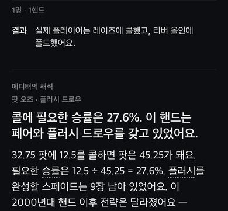
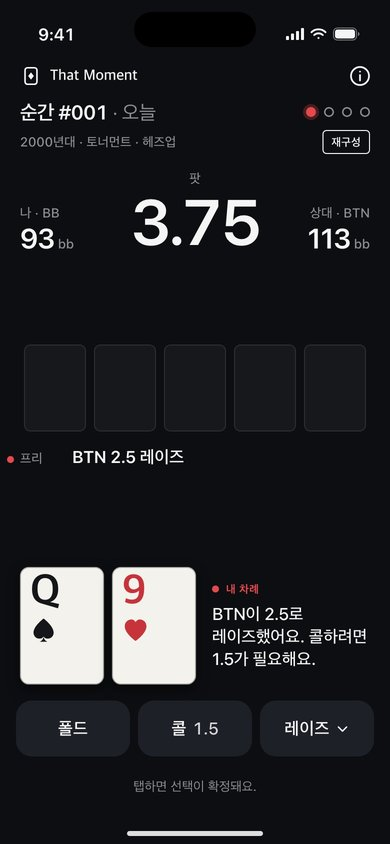
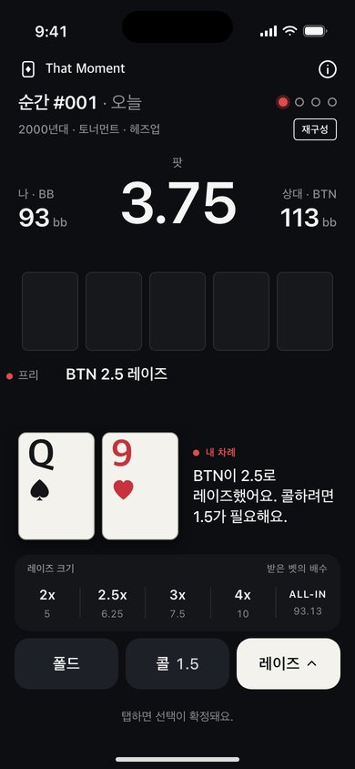
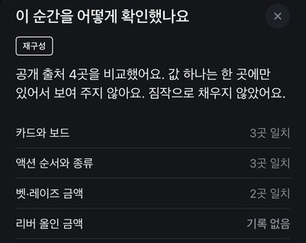
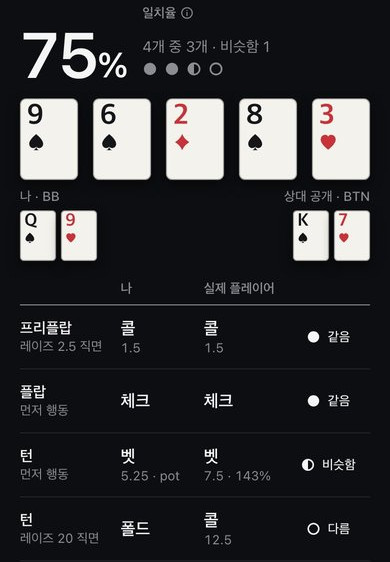
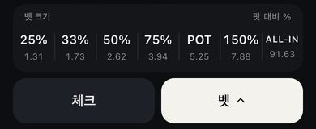
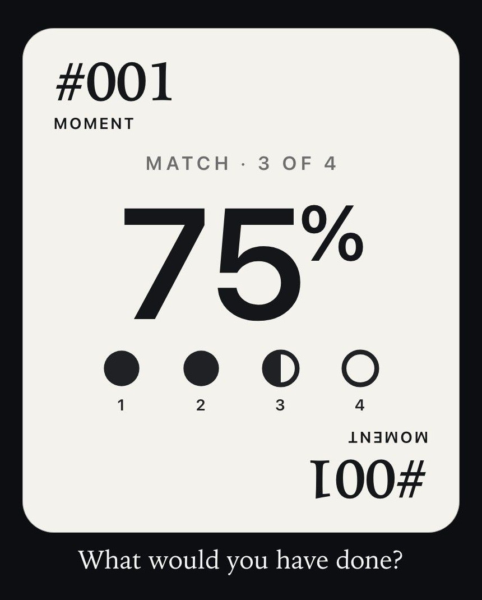

이유를 읽어요
결과마다 그 선택이 왜 나왔을 수 있는지 적은 짧은 해설이 먼저 열려요. 무료이고, 규칙이 아니라 하나의 해석으로 읽혀요.


폴드, 콜, 레이즈 중 하나를 골라요. 탭하면 바로 확정돼요.
모든 순간은 시작하기 전에 세 가지 표시 중 하나를 보여요.
교차 확인은 게임에 쓰이는 모든 값이 두 곳 이상의 출처에서 같다는 뜻이에요.
재구성은 값이 하나 이상 없거나, 한 곳에만 있거나, 출처끼리 다르다는 뜻이에요.
기록된 핸드는 완전한 기계 기록 하나에서 그대로 옮겼다는 뜻이에요.

That Moment는 기록에서 출발해 적어 둔 해설로 끝나요.
이 페이지의 화면은 디자인 미리보기예요. 출시 화면과 다를 수 있어요.

결과마다 그 선택이 왜 나왔을 수 있는지 적은 짧은 해설이 먼저 열려요. 무료이고, 규칙이 아니라 하나의 해석으로 읽혀요.

일치율은 내 선택과 기록을 스트리트별로 견줘요. 일치했다고 좋은 플레이라는 뜻은 아니에요.

벳과 레이즈는 정해진 사이즈 단계에서 골라요. 입력할 필요 없이 같은 기준으로 비교돼요.
가입도, 권한 요청도, 결제 화면도 앞을 막지 않아요.

일치율이 담긴 9:16 이미지를 보내요. 포커 카드도 선수 이름도 나오지 않아요.
모든 순간이 앱 안에 들어 있어서 오프라인에서도 돼요. 진행 기록은 내 폰에 저장돼요.
PRO는 구독이 아니라 한 번만 결제하는 구매예요. 가격은 구매 전에 앱에서 보여주고, 자동으로 갱신되지 않아요. 구매 복원은 PRO 화면이나 앱 설정에서 해요.
아니에요. 솔버도 AI 코치도 없어요. PRO의 결정별 분석은 기록된 액션으로 계산한 산수예요. 콜이 팟에서 차지하는 비율이나 스택 대 팟 같은 값이에요.
플레이에 순위를 매기지 않아요. 기록과 내 선택을 나란히 놓고, 하나의 해석을 보여줘요.
아니에요. That Moment는 공부용 앱이고 카지노나 도박 앱이 아니에요. 칩, 잔액, 상금, 입금, 환전이 없고, 앱에서 무엇을 해도 돈을 따거나 잃을 수 없어요.
텍사스 홀덤이고, 나와 상대 한 명이 겨루는 헤즈업 팟이에요. 한 순간에 결정이 2~4개이고 최소 두 스트리트에 걸쳐 있어요. 규칙 튜토리얼은 없어서 홀덤이 어떻게 진행되는지는 이미 안다고 가정해요.
결과마다 붙는 짧은 해설이에요. 그 선택이 왜 나왔을 수 있는지 적고, 규칙이 아니라 하나의 해석으로 보여줘요. 선수가 무슨 생각을 했는지는 단정하지 않아요. 해설은 기록의 숫자를 바탕으로 AI 가 초안을 쓰고 편집자가 검토해요. 모든 결과에서 무료예요.
순간마다 시대와 상황만 적어요. 누가 쳤는지는 밝히지 않고, 선수·대회 이름과 영상도 넣지 않아요. 결정과 기록에 집중하기 위해서예요.
출처에 값이 없거나 출처끼리 다르면 짐작으로 채우지 않고 「기록 없음」으로 표시해요. 차이가 아주 작으면 「≈」를 붙여 근사값으로 보여줘요. 벳 사이즈가 기록에 없으면 그 결정은 액션 종류만 비교하고, 결과 화면에 그 사실도 함께 보여줘요.
내 결정 중 당시 플레이와 같았던 결정의 비율이에요. 액션이 같아야 하고, 벳이나 레이즈는 사이즈가 같은 단계이거나 한 단계 차이여야 해요.
비교일 뿐 평가가 아니에요. 일치했다고 좋은 플레이라는 뜻은 아니에요.
계정은 없어요. 진행 기록은 이 기기에 저장돼요. 앱을 지우면 함께 지워지지만, 기기 백업을 쓰고 있다면 백업에서 돌아올 수 있어요.
선택 사항이에요. 결과를 본 뒤 앱이 알림을 제안하면 정한 시각에 받을 수 있고, 설정에서 언제든 켜고 끌 수 있어요. 하루에 한 번을 넘지 않고, 문구는 고정이라 핸드 정보가 나오지 않아요.
아니요. PRO는 한 번만 결제하는 구매라서 자동으로 갱신되지 않고 해지할 것도 없어요. 구매 복원은 PRO 화면이나 앱 설정에서 하고, 환불은 Apple에 요청해요.